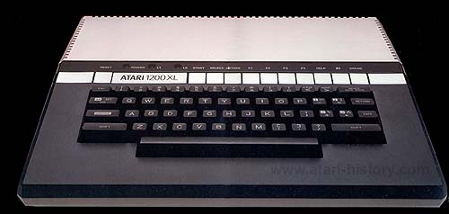
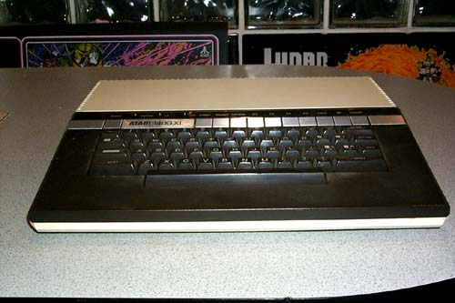
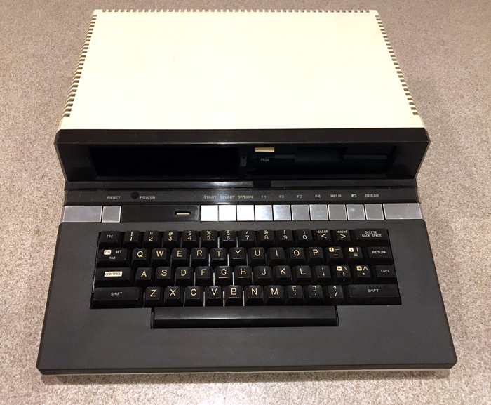

History of the ATARI XL Computer Systems
In 1981 Atari began work on its replacement to the Atari 400/800 computer systems in an effort to keep them current with technologies, give them an updated and more modern look and to reduce cost of manufacture.
The first design went through numerous project codenames: Z800, Sweet-16 and Elizabeth. Eventually it would be officially called the Atari 1200 then upon its release in January 1983 it would be officially called the 1200XL. The new Atari XL series was born.
The Atari 1200XL originally would have a simple Buss expander and 2 new 15 pin SIO connectors. Issues with RF noise, wanting a more formalized and capable expansion design and marketing not firm on how to move forward with the series having different designed SIO connectors, the 1200XL would be scaled back to a more closed design while Atari's engineering group would formalize its new "PBI" Parallel Bus Interface design and create a new OS to intelligently manage external parallel devices.
The 1200XL would start to arrive into dealers by February 1983 and in March of 1983 the specifications for the 600XL and 800XL computers would be completed. The 600XL would be the replacement to the Atari 400 as the 1200XL was the replacement to the Atari 800. The 800XL would be the replacement for the 1200XL since the 1200XL would not be able to fit with the newer XL's and also since the original replacement for the 1200XL, called the 1201XL was changed to have a built in modem and voice synthesizer and would become the Atari 1400XL which was spec'd out along with the 1250XLD in June of 1983.
The 1250XLD would change to become the 1450XLD, this would have a modem, voice synthesizer and a built in parallel disk drive interface with support for up to 2 360K high speed disk drives. All 4 of the new XL systems were expected to be ready for sale by the fall of 1983. Atari's CEO, Ray Kassar would be fired due to stock market insider trading and a loss of confidence by Warner Communications CEO Steve Ross in June of 1983. A new CEO for Atari was hired but he wouldn't start until September and when he did, he came into the company, put a 30 day hold of all work and canceled all projects he felt would not benefit Atari.
The 1400XL and 1450XLD were called, along with the Atari 1060 CP/M box, the Atari 1600XL hybrid Atari/MS-DOS PC clone and many other products. The new 600XL and 800XL would be the only XL's to be sold at the end of 1983. However, even their sales were crippled when Atari's new CEO James Morgan made a critical error in judgment regarding their manufacture. Atari had an existing manufacturing plant with Atari-WONG, It was ready to build and ship the new XL's, however Atari's new ATMC (Atari Taiwan Manufacturing Company) was not ready yet, but if the XL's were made in that new plant, they would cost $30 less each but there would be a 30 day delay before they could ship. James Morgan chose to wait the additional 30 days which caused Atari to lose the Christmas 1983 sales season and gave an almost totally unchallenged market over to Commodore for its C64 computers essentially giving Atari's biggest rival a massive leg up in sales.
By January 1984 Atari decides to revive the Atari 1450XLD. It would now be redone from the ground up into a new board design under the project codename "TONG" and it will be an all in one board with disk drive controller built in. Also work on the Atari 1090XL Expansion system is in high gear. By March and April of 1984 many of the expansion cards Atari had announced were nearing completion. Also in March of 1984 Atari inks a critical deal with Amiga Corporation. Amiga is out of money and to finish its "Lorraine" chipset it is in serious need of capital. Atari and Amiga signed into a contractual agreement that Atari would fund Amiga $500,000 to complete the development of the Amiga chipset. Atari would get exclusive rights to use the chipset under the Atari name for a new high-end game console. After one year, Atari could then sell a keyboard upgrade for the game console, plus utilize the technology in a new series of Atari computer systems).
On June 30, 1984 Amiga was set to deliver the chipset to Atari but backed out, instead it had negotiated in breach of their contract with Commodore to repay the loan back to Atari that Amiga had borrowed to complete the Amiga chipset and Commodore bought Amiga. Atari was never able to produce both its 1850XL computer and also its new high-end video game console which were both to be based on the Amiga chipset technology. On August 13, 1984 Atari filed suit against Amiga for breach of contract and use of technology that Atari had paid to be developed. The suit was settled in 1987, however it was a closed decision and although rumors leaked that Atari won the suit, no positive confirmation of this has been found to date.
The electronics design of the Atari XL series of computers were done in the New York WCI/NY Atari research labs under Steve Mayer with Gregg Squires as the head of Engineering. Meanwhile in Atari's Sunnyvale offices in the Industrial Design group headed by Roy Nishi, Regan Cheng designed the all new look for Atari's second generation of computers. Going for a very attractive high-tech look based on similarities to equipment made by Bang & Olufsen. Regan Cheng designed an all-new look into what became the first Atari XL computer, the Atari 1200XL. It can probably be labeled the world's first stylish and sexy looking computer system.
Credit: The ATARI Museum.
: The ATARI 800XL was ATARI Inc.'s strongest seller and a replacement to the $1200XL. At $300 less than the 1200XL, it offered the same functionalities plus a parallel interface. Released in 1983 with 64Ko of memory. Strongest seller of the 8-bit line.")